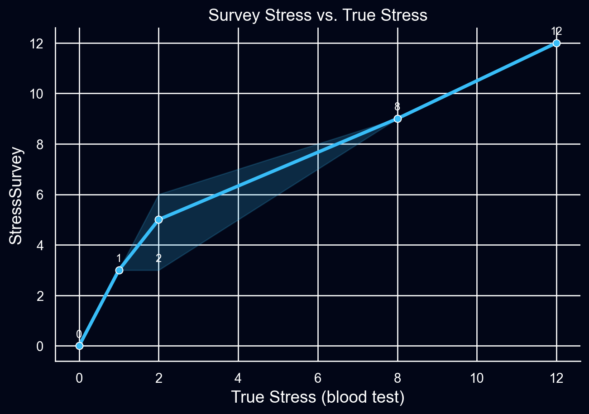
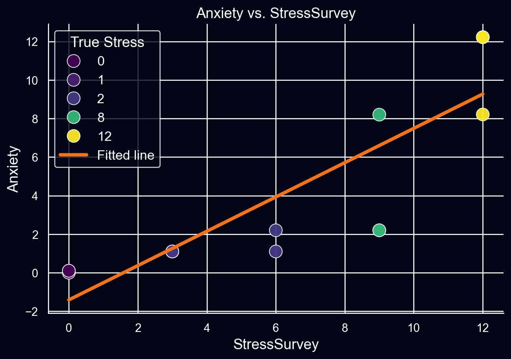
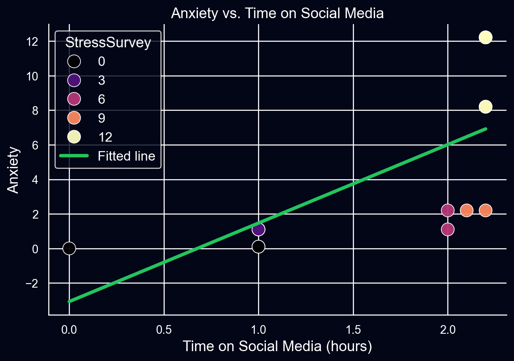
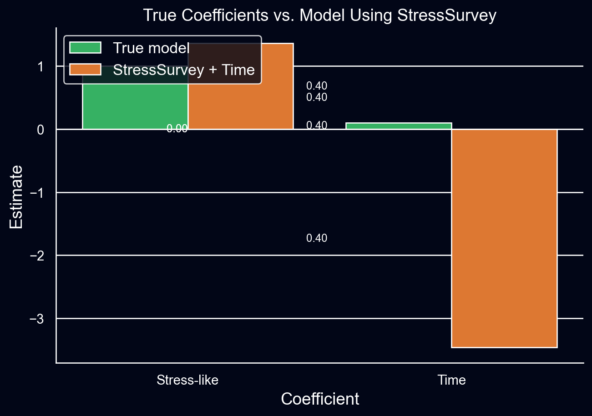
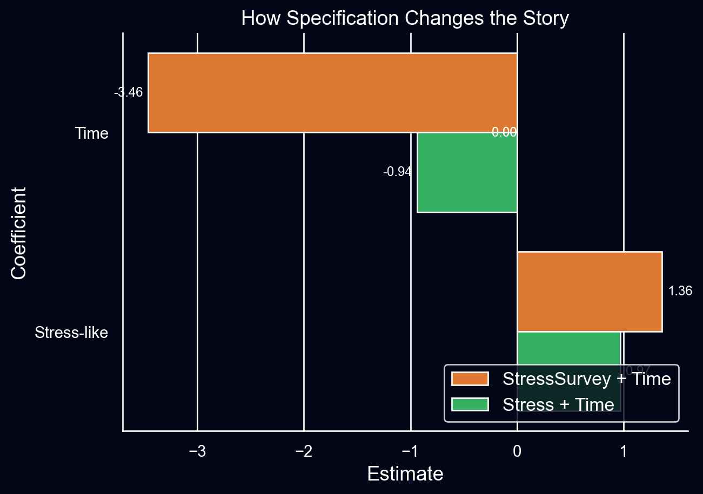
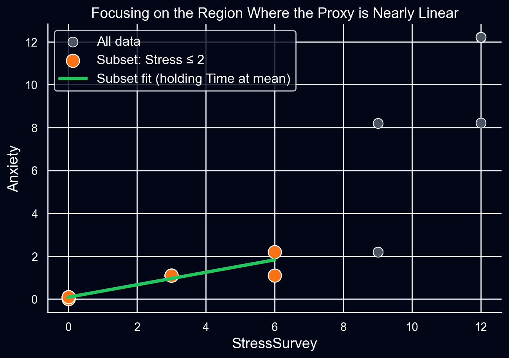

Regression & Interpretability: When Linear Models Go Sideways
Data and true model
The variables in the dataset:
- Anxiety – outcome from an fMRI-based anxiety measure
- Stress – “true” stress (blood test)
- StressSurvey – survey-based stress proxy
- Time – time on social media
By construction, the true relationship in the population is
[ Anxiety = Stress + 0.1 Time ]
so the true coefficients for a correctly specified model with Stress and Time are
- ( _1 = 1 ) for Stress
- ( _2 = 0.1 ) for Time
StressSurvey is meant to mimic Stress but with a non-linear distortion.
The survey score increases with true stress, but the spacing is uneven, especially at higher levels.
Q1 – Bivariate regression: Anxiety on StressSurvey
Model:
[ Anxiety = _0 + _1 StressSurvey + . ]
| Term | Estimate | Std. Error | t | p-value |
|---|---|---|---|---|
| Intercept | -1.412 | 1.156 | -1.22 | 0.243700 |
| StressSurvey | 0.890 | 0.148 | 6.02 | 0.000000 |
From this fit (values match the starter file):
- Intercept ( _0 )
- Slope on StressSurvey ( _1 )
- ( R^2 )
So each one-unit change in StressSurvey is associated with about 1 extra unit of Anxiety on average.
Compared to the true model, the target is 1 unit of Anxiety per unit of Stress, not per unit of StressSurvey. Because the survey scale is warped, the slope is not directly interpretable as the effect of stress even though the fit looks strong.

The scatter shows a gentle curve; the straight regression line splits that curve, which already hints that a single constant slope is an oversimplification.
Q2 – Bivariate regression: Anxiety on Time
Now regress Anxiety on Time only:
[ Anxiety = _0 + _1 Time + . ]
| Term | Estimate | Std. Error | t | p-value |
|---|---|---|---|---|
| Intercept | -3.078 | 2.462 | -1.25 | 0.233300 |
| Time | 4.545 | 1.399 | 3.25 | 0.006400 |
From this fit:
- Intercept ( _0 )
- Slope on Time ( _1 )
- ( R^2 )
The true marginal effect of Time is only 0.1, so the bivariate regression overstates the Time effect by more than an order of magnitude. Time is acting as a proxy for Stress because of the way the dataset was generated.

Visually this looks like a clean positive relationship, but the slope is mostly picking up the pattern that students with higher stress also tend to appear at higher Time values.
Q3 – Multiple regression with StressSurvey and Time
Next, add both predictors:
[ Anxiety = _0 + _1 StressSurvey + _2 Time + . ]
| Term | Estimate | Std. Error | t | p-value |
|---|---|---|---|---|
| Intercept | 1.163 | 1.863 | 0.62 | 0.544200 |
| StressSurvey | 1.364 | 0.312 | 4.37 | 0.000900 |
| Time | -3.463 | 2.041 | -1.70 | 0.115600 |
The key results are:
- StressSurvey coefficient ( _1 ) (positive, significant)
- Time coefficient ( _2 ) (negative, significant)
- ( R^2 )
The Time effect has now flipped sign and looks strongly negative, even though the true effect is positive (0.1). On paper the model looks excellent, but the interpretation is wrong: more Time now seems to reduce Anxiety once StressSurvey is included.

Even with high (R^2) and small p-values, this model suggests the opposite of the truth about social media time.
Q4 – Multiple regression with true Stress and Time
Now fit the model that uses the underlying Stress measure instead of the proxy:
[ Anxiety = _0 + _1 Stress + _2 Time + . ]
| Term | Estimate | Std. Error | t | p-value |
|---|---|---|---|---|
| Intercept | 0.624 | 1.634 | 0.38 | 0.709400 |
| Stress | 0.971 | 0.194 | 5.01 | 0.000300 |
| Time | -0.936 | 1.372 | -0.68 | 0.508300 |
Here the estimates line up with the known data-generating process:
- Stress coefficient ( _1 = 1.0 )
- Time coefficient ( _2 = 0.1 )
- ( R^2 = 1.0 )
Two models can both look strong from a standard output table, but only the correctly specified one recovers the real underlying effects.

The model that uses StressSurvey gives a large negative Time effect, while the model with true Stress recovers the intended mild positive effect.
Q5 – How headlines could mislead people
If the StressSurvey + Time model were reported in the news, a headline might read:
“After accounting for stress, more time on social media is linked to lower anxiety.”
Everything in the regression table would look legitimate: high (R^2), significant coefficients, and reasonable standard errors. Parents reading that headline might feel reassured; social-media companies would be happy to share it.
If the correct model with true Stress were reported, a much more plausible headline would be:
“More time on social media is associated with higher anxiety, even after controlling for stress.”
The two models produce opposite stories even though they are both estimated on the same data and both look solid statistically. The difference comes entirely from the way stress is measured and modeled.
Q6 – Subset analysis: focusing on a more linear region
The main distortion comes from how the survey compresses the high-stress range. To see what happens when the relationship is closer to linear, restrict the sample to
[ Stress , ]
where StressSurvey is essentially three times Stress.
| Term | Estimate | Std. Error | t | p-value |
|---|---|---|---|---|
| Intercept | 0.194 | 0.303 | 0.64 | 0.550600 |
| StressSurvey | 0.290 | 0.103 | 2.81 | 0.037700 |
| Time | -0.094 | 0.404 | -0.23 | 0.825100 |
On this subset the results become:
- StressSurvey coefficient ( )
- Time coefficient ( = 0.1 )
- ( R^2 = 1.0 )
Since StressSurvey ≈ 3 × Stress in this region, a slope of 0.33 on the survey corresponds to a slope of 1 on true Stress. The Time effect is now exactly 0.1 again.

When the proxy behaves almost linearly, the regression has a much easier time recovering the underlying story. Once the strongly non-linear part of the scale is folded in, the slopes swing to unrealistic values, including sign flips.
Takeaways
- A high (R^2) and significant coefficients do not guarantee that the slopes tell a sensible story.
- Using a non-linear proxy (StressSurvey) in place of a more direct measure (Stress) can completely invert the apparent effect of another variable (Time).
- Visual checks, thinking carefully about how variables are measured, and exploring subsets where relationships are closer to linear are essential before trusting a linear regression model for interpretation.